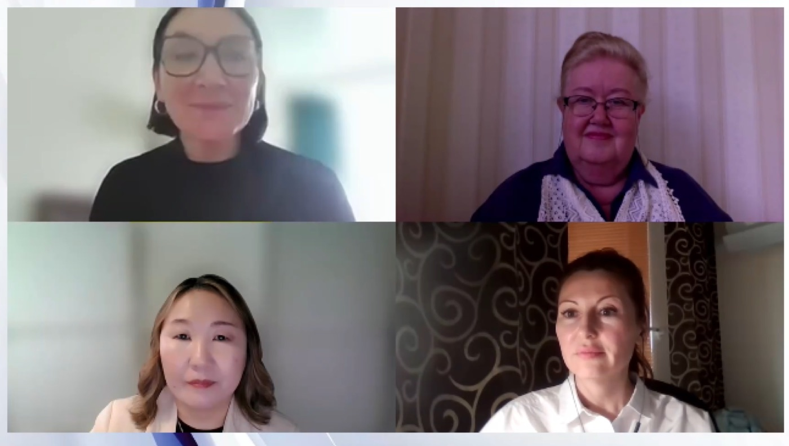

Смотреть
Видео
Лекции и разборы экспертов клуба и записи мировых конференций — в одном разделе.
146лекций клуба
 1:24:10
1:24:10Отоневрология·13.11.2025·Новое
Диалоги о головокружении
Как за десять минут приёма отличить периферическое головокружение от центрального: разбор реальных случаев невролога и оториноларинголога.
ЗМ
Замерград Максим Валерьевичд.м.н., профессор кафедры неврологии РМАНПО
ГА
Гусева Александра Леонидовнад.м.н., доцент кафедры оториноларингологии РНИМУ им. Н.И. Пирогова
 58:42
58:42Отоневрология·30.10.2025
Лабиринты отоневрологии
Зайцева О.В.
 1:02:15
1:02:15Отоневрология·23.10.2025
Лабиринты отоневрологии. Часть 2
Зайцева О.В.
 47:30
47:30Клинразбор·16.09.2025
Интерактивная отоневрология: тревожные пациенты с головокружением. Часть 6
Замерград М.В., Гусева А.Л.

1:11:05Диагностика·02.07.2025
Болезнь Фабри. Современные подходы к диагностике и лечению
Шорина А.Р., Баранова Е.И.
 1:32:40
1:32:40Лечение·18.06.2025
Расстройства тревожного и обсессивно-компульсивного спектров. Ответы на вопросы
Медведев В.Э.
1:24:10Отоневрология·13.11.2025
Диалоги о головокружении
Замерград М.В., Гусева А.Л.